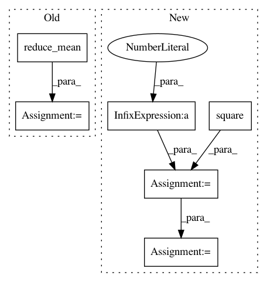

98fe0142e39af4a9a2450ca3f3e48a53152f5091,tensorforce/updater/deep_q_network.py,DeepQNetwork,create_training_operations,#DeepQNetwork#,152
Before Change
name="q_acted")
// we calculate the loss as the mean squared error between actual observed rewards and expected rewards
loss = tf.reduce_mean(tf.square(self.q_targets - q_values_actions_taken), name="loss")
if self.gradient_clipping is not None:
grads_and_vars = self.optimizer.compute_gradients(loss)
for idx, (grad, var) in enumerate(grads_and_vars):
if grad is not None:
grads_and_vars[idx] = (tf.clip_by_norm(grad, self.gradient_clipping), var)
self.optimize_op = self.optimizer.apply_gradients(grads_and_vars)
self.optimize_op = self.optimizer.minimize(loss)
After Change
// if gradient clipping is used, calculate the huber loss
if self.config.clip_gradients:
huber_loss = tf.select(tf.abs(delta) < 1.0, 0.5 * tf.square(delta), tf.abs(delta) - 0.5)
self.loss = tf.reduce_mean(huber_loss, name="loss")
else:
self.loss = tf.reduce_mean(tf.square(delta), name="loss")
self.optimize_op = self.optimizer.minimize(loss)
In pattern: SUPERPATTERN
Frequency: 3
Non-data size: 6
Instances
Project Name: reinforceio/tensorforce
Commit Name: 98fe0142e39af4a9a2450ca3f3e48a53152f5091
Time: 2016-12-29
Author: k@ifricke.com
File Name: tensorforce/updater/deep_q_network.py
Class Name: DeepQNetwork
Method Name: create_training_operations
Project Name: deepfakes/faceswap
Commit Name: b7b1bd5c6f7892061a9915cd27d19360482d1fd8
Time: 2019-08-03
Author: vrooman.kyle@gmail.com
File Name: lib/model/losses.py
Class Name:
Method Name: gmsd_loss
Project Name: reinforceio/tensorforce
Commit Name: ed233350fa0580747d9f9e247c9aa7933c1526e9
Time: 2017-06-11
Author: mi.schaarschmidt@gmail.com
File Name: tensorforce/models/naf_model.py
Class Name: NAFModel
Method Name: create_tf_operations